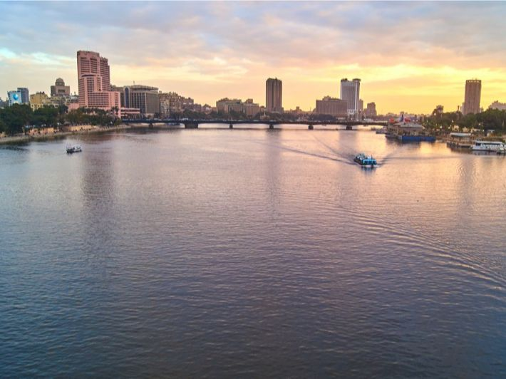

"مصر بعيون النيل" هي مبادرة وطنية تسعى إلى بناء وعي طلابي مستنير يعتمد على المعرفة والتحليل، وتهدف إلى توثيق ما حققته الدولة من إنجازات عملاقة في مختلف المجالات، ودعم التفكير النقدي في مواجهة الشائعات وتزييف الحقائق.

إنجازات الدولة المصرية
شهدت مصر في السنوات الأخيرة نهضة عمرانية وتنموية هائلة، شملت تطوير البنية التحتية، وبناء مدن ذكية، وتحديث شبكة الطرق والكباري، بالإضافة إلى مشاريع الإسكان الاجتماعي التي تهدف إلى توفير حياة كريمة للمواطنين.
في مجال التعليم، تم إدخال نظم تعليمية رقمية حديثة، وبناء مدارس جديدة، وتطوير مناهج ترتكز على مهارات التفكير. كما تم تعزيز منظومة الرعاية الصحية ببناء المستشفيات وتطوير وحدات الرعاية الأولية.
أطلقت الدولة العديد من المشروعات القومية، أبرزها العاصمة الإدارية الجديدة، ومشروع الدلتا الجديدة الزراعي، وتطوير الموانئ، ومبادرة حياة كريمة التي تهدف إلى تحسين حياة 60 مليون مصري في القرى.
هذه المشروعات لا تخدم فقط الاقتصاد، بل تؤسس لبيئة معيشية أفضل، وتخلق فرص عمل، وتعزز من مكانة مصر إقليميًا ودوليًا.
دور الطلاب في المبادرة
تهدف المبادرة إلى تمكين الطلاب من التعبير عن رؤيتهم لمستقبل وطنهم من خلال مشاريع رقمية، وأبحاث توثيقية، وفيديوهات توعوية. المشاركة الطلابية تعزز الإبداع، وتغرس الانتماء، وتحفزهم ليكونوا مواطنين فاعلين.
كما تعمل المبادرة على ربط الطلاب بالواقع المجتمعي،و تجعل منهم عناصر مهمة لنشر الوعي بالمشروعات القةمية الكبرى و الإنجازات الوطنية
مواجهة الشائعات وتعزيز الوعي
تواجه مصر تحديات متزايدة في مجال الشائعات والمعلومات المغلوطة، خاصة في ظل الانتشار الواسع لوسائل التواصل الاجتماعي. ومن هنا يأتي دور المبادرة في نشر ثقافة التحقق من المعلومات ومقاومة الإشاعات.
المبادرة تحفز الطلاب على التفكير النقدي، وتزويدهم بالمهارات اللازمة للتفريق بين الحقيقة والتضليل، ليكونوا خط الدفاع الأول ضد حروب الجيل الرابع والخامس.
رؤية و تصور لمستقبل مصر من خلال ابداعات ابنائها
مستقبل مصر يصنعه أبناؤها المبدعون، الذين يزرعون الأرض علمًا، ويشيّدون المصانع ابتكارًا، وينسجون من الفن والثقافة هوية متجددة. بإبداعاتهم تنهض المدن وتتطور القرى، فتخرج من المعامل ابتكارات هندسية، وتنتج المصانع صناعات محلية متطورة، ويبدع الشباب في البرمجيات والطاقة النظيفة والفنون الحديثة، ليضعوا مصر في قلب المستقبل، شامخة بعبق ماضيها وروح تجددها.